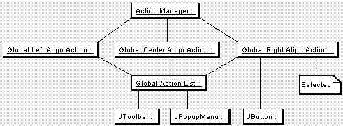
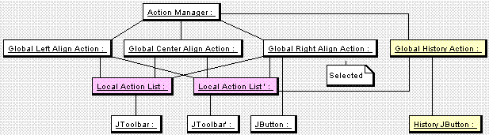
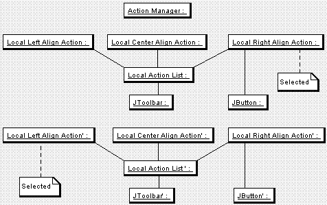
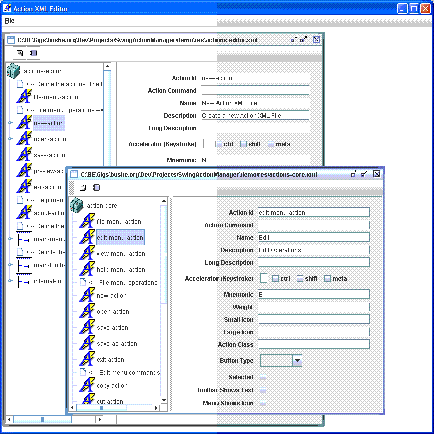

The Swing Action Manager (SAM) library gives more power to Swing Actions. SAM aids in the creation, usage and management of javax.swing.Actions in Swing application toolbars, menus and elsewhere.
Users of SAM are expected to be familiar with Swing Actions. See How to Use Actions in The Swing Tutorial for a nice introduction.
Actions were intended to be centralized command classes that can be shared amongst widgets (such as toolbar buttons and menu items), but they were not
SAM is flexible enough for use in complex applications, yet easy to use in simple applications. SAM mainly features:
If you want to get going quickly, see Sam Usage.
Mark Davidson's name is on a lot of the Swing classes' @author tags. I searched out Mark at JavaOne in 2003 to discuss the Action framework that had I created over the previous year. He said, "Did you see the article posted today on JavaDesktop.org"? (Except his words weren't hyperlinked :-> ). As we discussed the capabilities of both frameworks, we realized we covered some of the the same ground. After JavaOne I merged some of his code into SAM, stealing the XML parsing outright and making the APIs similar. Since then, his work has been incorporated into JDNC. SAM evolved separately, but I am now finallly offering to contribute it back to JDNC, if they will have it. SAM has many features that do not exist in JDNC Actions, so SAM may be more suitable to your project. I intend to incorporate the concepts of JDNC Actions into SAM if it gets merged, of course. Let's look at the capabilities of SAM in detail, meawhile comparing SAM features to JDNC Action features.
Unless otherwise specified, all classes are located in the org.bushe.swing.action package.
SAM provides a {@link org.bushe.swing.action.BasicAction} convenience class to use as a replacement for Swing's AbstractAction, which it extends (if only Swing APIs were based on interfaces...oh well).
SAM in no way requires the use of BasicAction, and assumes only javax.swing.Action in its signatures. Swing's AbstractAction is pretty much just a set of name-value pairs that fires property change events when the values change. SAM always treats Actions as string/value pairs, just like Swing. An action used with SAM will have it's PropertyChangeListener notified of any changes to properties that SAM defines. Specifically, all action properties, including those specific to BasicAction, are set via Action's putValue(String, Object) method, except for listeners and behavioral delegates (which are not "properties").
BasicAction is useful, but still "basic." It is recommended that you extend BasicAction for your own purposes instead of using it directly out of the box. At a minimum, override the handleException() to do something better than printing to System.err - like using whatever logging framework your application uses. You may want to add other facilities like adjusting the cursor state, using glass panes, handling threading or using SwingWorker-like facilities.
If you make your own base action class you can install it programattically by setting the the defaultActionClass of ActionAttributes, see ActionAttributes.setDefaultActionClass(Class). In an Action XML file, you can set the defaultActionClass property of the <action-set> element which sets the default class for actions in that XML file, unless an individual <action> element overrides it by setting its own class via its actionClass property of the <action> element.
Even though you are encouraged to create your own Action base class, BasicAction provides a lot of functionality right out of the box.
public KeyStroke getAccelerator() {
return (KeyStroke)getValue(ACCELERATOR_KEY);
}
public void setAccelerator(KeyStroke accelerator) {
putValue(ACCELERATOR_KEY, accelerator);
}
public final void actionPerformed(ActionEvent evt) {
actionPerformedTemplate(evt);
}
This method is final to ensure developers don't override actionPerformed()
and bypass the goodies in BasicAction, such as calling delegate listeners.
Instead, developers should override the execute(ActionEvent event) method
that is called by the actionTemplate method. (If you would like to use a different
template, you can override actionPerformedTemplate() in your application's
base Action class.) BasicAction's actionTemplate() surrounds execute() with
a few other calls. Let's look at it:
protected void actionPerformedTemplate(ActionEvent evt) {
try {
actionPerformedTry();
execute(evt);
propogateActionEvent(evt);
} catch (Throwable t) {
actionPerformedCatch(t);
} finally {
actionPerformedFinally();
}
}
The template calls a number of overridable methods. The execute() method is
the heart of BasicAction. The actionPerformedTry(), actionPerformedCatch()
and actionPerformedFinally() methods wrap execute(ActionEvent). public void updateEnabledState() {
boolean shouldBe = shouldBeEnabled();
setEnabled(shouldBe);
}
Calling updateEnabledState() calls setEnabled() with the results of shouldBeEnabled().
The action is responsible for implementing shouldBeEnabled(). The action
can solve this internally, typically by looking at its context. In fact,
by default, when context values change updateEnabledState() is called
automatically.true
for their shouldBeEnabled() method, the action is enabled.
I'm not too familiar with the growth of JDNC Actions from the initial version Mark Davidson wrote. I'm just looking at the Javadoc for now.
JDNC has an AbstractActionExt class. It has the convience methods for the typical action properties. It has support for ItemEvents, including group and selected properties. It also has a dispose() method (what is this, C?).
JDNC has a hierarchy of actions extending AbstractActionExt - BoundAction, TargetableAction, CompositeAction; and one that does not: ServerAction (which does an HTTP post, not what I usually do with my servers). The hierarchy is generally a bad idea in a general purpose library. What if you want an action that is bound and composite or bound and targetable or targetable and server? You have pick one class to extend from and re-write the other one or two. Instead, SAM prefers interfaces so that you can use your own actions. BasicAction implements all the interfaces to create a single extension point. JDNC's ActionManager has getBoundAction(), getTargetableAction(), getServerAction, isBoundAction, isServerAction(), etc. This is bloat, in my opinion, and gets more bloated as new actions are used. In my applications, I have dozens of Action classes and I'll take the cast myself, instead of having the ActionManager do it for me..
JDNCs BoundAction extends AbstractActionEx supports the addActionListener and addItemListener delegations. It supports the isSelected() and getGroup() methods. BoundAction also supports a loosely bound model, enabling one to register a callback method name on any object when actionPerformed is called. I'm religiously against this practice, but SAM provides it anyway, though not in BasicAction. Instead, SAM's ActionManager can tie any object's method to any action that implements the Actionable inteface (addActionListener()) (JDNC's ActionManager is similar).
What SAM's actions don't have but JDNC has :
What SAM's actions have but JDNC doesn't have :
SAM's ActionList is a bit of a misnomer. An ActionList is a List of Actions, and implements the List interface, but it's more like an ActionTree or ActionGroup (a good name used by the GUI Commands project). ActionLists are hierarchical lists of Actions. An ActionList can contain Actions and other ActionLists. ActionLists represent the Actions that are used to create a toolbar or a hierarchical menu structure. ActionLists can represent JSeparators by containing null or an instance of a Separator in the list.
ActionLists have a few properties in addition to the actions they hold:
ActionLists have a series of convenience methods:
ActionLists can be defined in XML or in code and are typically returned by the ActionManager and used by the ActionUIFactory to make toolbars and menus. This is further explained below. Keep in mind that actions in an action-list can refer to actions defined elsewhere or they can be defined directly inside the list. Here is an example:
<action-list id="main-menu">
<action-list id="file-menu" triggerActionRefId="file-menu-action">
<action idref="new-action"/>
<action id="open-action-for-menu" idref="open-action" mnemonic="P"/>
<action idref="save-action"/>
<separator/>
<action idref="exit-action"/>
</action-list>
<action-list id="edit-menu" triggerActionRefId="edit-menu-action">
<action idref="copy-action"/>
<action idref="cut-action"/>
<action idref="paste-action"/>
</action-list>
<action-list id="view-menu" triggerActionRefId="view-menu-action">
<group id="align">
<action idref="align-left-action"/>
<action idref="align-center-action"/>
<action idref="align-right-action"/>
</group>
<separator/>
<action id="history-action" mnemonic="B" desc="Shows or hides the status bar"/>
<role name="Manager"/>
</action-list>
<action-list id="help-menu" name="Help" mnemonic="H" desc="Help Operations">
<action idref="about-action"/>
</action-list>
</action-list>
The ActionManager is a repository for Actions and ActionLists. There is one static ActionManager created by default. You can create other named instances to separate groups of actions if your design sees fit. This usually is not necessary for simple applications, and even complex applications can make use of the abillity to merge XML files instead of using multiple ActionManagers, however, if multiple action XML files are coming from various sources, loading each set of actions into their own named Action Manager may make management easier.
The ActionManager can be loaded with Actions and ActionLists programmatically or via an XML file. Usually you will just register an entire Action XML document using one of {@link org.bushe.swing.action.ActionManager#register(File)}, {@link org.bushe.swing.action.ActionManager#register(URL)}, or {@link org.bushe.swing.action.ActionManager#register(InputStream)}. Actions are not instantiated when an Action XML file is read (todo: add flags to the XML so that they can be instatiated right away if desired). Loading an Action XML document instead loads ActionAttributes prototypes and Action Id Lists (see below).
Actions can be registered programmatically by loading an Action or an ActionAttributes prototype, using {@link org.bushe.swing.action.ActionManager#registerAction(Object, Action)} or {@link org.bushe.swing.action.ActionManager#registerActionPrototype(Object, ActionAttributes)}, respectively. Since Actions are simply sets of name/value pairs, then only name/value pairs are needed to define them. ActionAttributes is just a name-value pair class. Loading ActionAttributes defers the step of instantiating Actions and their Action classes until they are needed. The Actions that correspond to the ActionAttributes are registered the first time they are requested via {@link org.bushe.swing.action.ActionManager#getAction(Object)} or {@link org.bushe.swing.action.ActionManager#createAction(Object)}.
This is an ugly detail you usually don't need to worry about, however, this is the hook to defining your own default Action class to use instead of using BasicAction - call {@link ActionAttributes#setDefaultActionClass(Class)}. In an Actions XML file, set the defaultActionClass attribute of an <action-set> element to apply a class to all the actions in the set.
Likewise you can register an ActionList with the ActionManager via {@link org.bushe.swing.action.ActionManager#registerActionList(ActionList )} (though this is rare in practice), or an ActionList prototype called an Action Id List using {@link org.bushe.swing.action.ActionManager#registerActionIdList(ActionList )}. Loading an Action XML file loads an Action Id List for each <action-list> element (see below). The ActionList passed into registerActionIdList does not contain Actions like most ActionLists, instead it contains ids to actions or action prototypes (or even action list prototypes for submens) already registered. (Reuse of the ActionList for this purpose may give the class too many responsibilities, but it works.) Again, this is another detail you usually don't have to worry about, but the next section is related, and important.
When an Action or an ActionList is registered programatically with the ActionManager, they exist globally. Calling ActionManager.getAction(Object id), retrieves the same instance each time, likewise for ActionManager.getActionList(Object id). However, when prototypes of Actions and ActionList are registered, such as when an XML file is registered, then they are not immediately instantiated and do not exist globally. These action prototypes can be used to create Actions that are global or local. Global Actions and global ActionLists can be created and retrieved via {@link org.bushe.swing.action.ActionManager#getAction(Object id)} and {@link org.bushe.swing.action.ActionManager#getActionList(Object id)}. When calling these methods, if the Action or ActionList does not exist, it is created from its prototype and registered globally. Thereafter, calling getAction(Object) retrieves the single global instance.
You can instead create local instances of Actions and ActionLists as well via the {@link org.bushe.swing.action.ActionManager#createAction(Object)} and {@link org.bushe.swing.action.ActionManager#createActionList(Object)} methods of ActionManager. Actions and ActionLists created with these methods are not held by the ActionManager and a new instance if created each time.
It is important to understand the difference between global and local actions and the usage of ActionManager's getAction() vs. createAction(). In simple applications, there is typically one globally shared Action instance per Action id and one global ActionList per list id that points to the global action. For example:

The following code produces this result, assuming XML loads up the ActionManager with an ActionList and the three actions:
ActionManager.register(new File("./actions.xml"));
ActionList globalList = ActionManager.getActionList("main-list");
JToolbar mainToolbar = ActionUIFactory.createToolbar(globalList);
JPopupMenu mainMenu = ActionUIFactory.createPopupMenu(globalList);
JButton miscButton = ActionUIFactory.createButton("right-align-action");
This is the typical, small application usage. All actions are globally shared. A JToolbar and JPopupMenu menu each are created with the same global action list reference (we're peaking ahead at the ActionUIFactory here, see below). The global list points to global actions that are created and maintained in the Action Manager. A JButton is also created with one of the global actions. The list is acquired via getActionList() and the global action for the button is retrieved by getAction() (used by default in the ActionUIFactory). All JCompoents created with the Actions share the same global Action instance.
This is an easy way to work, and is the default behavior of ActionManager. When the selected state is changed (if ItemActions), the button, toolbar and popup menu are all updated. When the context is set on teh global action, it applies to all JComponents. This is the way Actions are supposed to work! Nice and easy. The screenshot of the demo above is an application that uses this scheme.
There are use cases, however, when a more complex motif is necessary. Let's say your application has a toolbar and a popup menu, but they are not identical. The popup menu has an additional "history" menu item. You still want to share the same global Actions, so that your components are kept in sync, but you can't use the same list as above, since it doesn't have a History action. What you need to do is create local ActionLists referencing global Actions.

There are now two local action lists created with ActionManager.createActionList(). (Yes this effect could have been done with two global list, but that wouldn't illustrate the point as well). To illustrate the "localness" of the lists, this could be done like so:
ActionManager.register(new File("./actions.xml"));
ActionList localToolbarList = ActionManager.createActionList("main-toolbar-list", true);
ActionList localPopupList = ActionManager.createActionList("main-toolbar-list", true);
popupList.add(ActionManager.getAction("history-action"));
JToolbar toolbar = ActionUIFactory.createToolbar(localToolbarList);
JPopupMenu menu = ActionUIFactory.createPopupMenu(localPopupList);
JButton miscButton = ActionUIFactory.createButton("right-align-action");
JButton historyButton = ActionUIFactory.createButton("history-action");
The "true" passed to createActionList() tells the ActionManager to create a local List, but have the actions in the local list be references to the globally shared actions (created on the fly if necessary). The localPopupList is modified to add the global history action to it, so the popup can look different from the toolbar. The history button still shares the same global action as the popup menu item.
There's a third motif common to complex applications such as network management consoles, intensive reporting applications, trading workstations, etc. In these immersive applications, users often look at the same set of data in many different ways or work on similar but different sets of data in the same way. These applications often have JInternalPanes, JSplitPanes, or Docking Frameworks (such as JIDE or FlexDock) that the user can manipulate to see data side by side. In these cases, there may be two or more "internal" windows with the same kind of view, each with its own toolbar that applies to the data in that view. A more common example is multi-file editor that may have somewhat different popup menus depending on the file type (XML, Java, etc.). These situations call for actions local to the instance of the view. The context and enablement of the actions will depend on the data in each view - therefore the actions should not be shared. Here is an example where there are two document windows. The document on the top is right-aligned, the document on the bottom is left aligned.

Here is the code to produce this result:
ActionManager.register(new File("./actions.xml"));
View topView = new View("right");
View bottomView = new View("left");
...
public View(String alignment) {
ActionList localToolbarList = ActionManager.createActionList("main-toolbar-list", false);//false = do not use global actions for this list
//This may be the right, center or left alignment depending on the alignment property of this view
BasicAction alignedAction = (BasicAction)localToolbarList.getActionById(alignment+"-align-action");
alignAction.setSelected(true);
JToolbar toolbar = ActionUIFactory.createToolbar(localToolbarList);
add(BorderLayout.NORTH, toolbar);
alignAction.setContext("document", doc);//setup the action with this view's data
}
SAM's ActionEditor uses the local action motif for each internal frame. Below
is a screenshot, to run it live, "ant editor". Each internal frame
has it's own save and preview buttons, each applies to the document it's editing:

Other ActionManager Features
JDNC's ActionManager is much simpler than SAM's ActionManager. It has only getAction() methods to return global instances, and no local action or action list support. JDNC's ActionManager also has some questionable methods that return specific action types such as getTargetableAction(). SAM prefers casting, even for BasicAction, since nearly all actions end up being cast to their specific type in actual use.
The final piece of the puzzle, from an API standpoint, is the ActionUIFactory. Suffice it to say that you can create toolbars, menus, popupmenus, and buttons from Actions and ActionLists. It is extensible in the sense that you are not limited to creating simple JButtons. If you want to create FooButtons or JXButtons, or JGoodies Buttons, then you can override the instantiateButton method in your own factory extension. Other methods can be overridden to provide the utmost extensibility.
Speaking of buttons, ActionUIFactory will create the right kind of button depending on the Action's "buttonType" property - toggle, checkbox, radio, or plain. The ActionUIFactory respects groups - it will create toggle buttons or menu items and create their groups. A feature unique to SAM is the synchronization of toggle button Item State created from the same action without leaking memory (it uses bidriectional WeakReferences). An example of this is shown above.
You can create multiple named ActionUIFactories, just like you can have multiple named ActionManagers. You might want multiple named ActionUIFactories if you create different types of widgets. An ActionUIFactory refers to the default ActionManager by default, but you can set a specific ActionManager on a factory.
JDNC's UIFactory is similar than SAM's ActionUIFactory, but does not allow the extension points, and therefore is quite limited. It doens't support synchronization of selection states out of the box, and what support it does have is begging for a memory leak.
Why write Actions in XML when you can just code them? XML should be used judiciously. There are the drawbacks of a lack of compile time type and name safety - there is nothing to ensure your code is refering to the action using the same string your XML is using or that the class name in the XML actually exists.
The advantages to using XML for Actions are (1) the XML is truly easier to read and edit than Action or JPopupMenu code, (2) it forces centralization of a concern - it's much easier to find a menu in an XML file by name than to determine in a pile of Swing code which class defined it, and (3) menu merging for plugin architectures is made possible through Action XML.
SAM has a Action XML editor to make it easier to edit action files. Currently this is just demo quality. Don't worry, editing Action XML is pretty simple.
The details for each attribute is included in the res\action-set.dtd file documentation. This document will outline only high-level issues. The action-set.xsd schema is autogenerated from the DTD, not documented, and not used in the project. It is provided merely as a convenience and may not even reflect the most accurate schema for Actions.
Each action XML file has a root <action-set> element. The id of the action-set is not used by SAM at this time, nor is the action-set itself. The only other property of the action set is is the defaultActionClass. If you create a BasicAction extension (or even an AbstractAction extension) for all your actions, specify it here. The action-set can contain <action> and <action-list> elements. The <action-list> element can contain <actions> or other <action-list> elements.
Actions are defined with the <action> element that has attributes matching all the property names that AbstractAction and BasicAction define. The attributes are fully explained in the DTD. Here is an example from the ActionEditor (with the "weight" attribute and the "role" element added).
<action id="new-action"
name="New Action XML File"
mnemonic="N"
smicon="/toolbarButtonGraphics/general/New16.gif"
lgicon="/toolbarButtonGraphics/general/New24.gif"
accel="control N"
desc="Create a new Action XML File"
weight="5"
actionClass="org.bushe.swing.action.editor.NewInternalFrameAction">
<name-value-pair name="newOrOpen" value="new"/>
<role name="Editor"/>
<role name="Admin"/>
</action>
It is fairly self-explanatory. Keep in mind that the lgicon is not used by SAM (though you might find a need for it in your application), nor is the longdesc (not shown). The desc is used as the toolip. The weight determines where it will be placed in a menu. Weight is not necessary and usually only helpful when merging files, see "Merging" below.
The name-value-pair element allows you to add arbitrary values to the Action. The above element is equivalent to:
action.putValue("newOrOpen", "new");
The <role> elements act as an authentication mechanism. The way this works is that once the user logs in, you can find out the role names that they act in (this is determined by your applicatoin's authentication mechanism. Once you have the role names, set them on the ActionManager. As your application tries to create toolbars and menus, if an Action's role is specified and at least one of those roles is not set on the ActionManager, then that action will be skipped. For example, if I logged in as Admin, and my toolbar had 3 buttons, one with the above roles and the other two with no roles, then when I log in as guest, then there would only be two buttons on the same toolbar.
You can define a parent <action> that other actions actions can extend. This is done through the XML idref property. For example, the action editor has two actions that use the same NewInternalFrameAction class. One uses the newOrOpen value of "new" the other uses a value of "open." One action class handles both responsibilities, since they are very similar. The <action> elements could have used a common ancestor, like so:
<action id="internalFrameAbstractAction"
weight="5"
actionClass="org.bushe.swing.action.editor.NewInternalFrameAction">
<role name="Editor"/>
<role name="Admin"/>
</action>
<action id="new-action" idref="internalFrameAbstractAction"
name="New Action XML File"
mnemonic="N"
smicon="/toolbarButtonGraphics/general/New16.gif"
lgicon="/toolbarButtonGraphics/general/New24.gif"
accel="control N"
desc="Create a new Action XML File">
<name-value-pair name="newOrOpen" value="new"/>
</action>
<action id="open-action" idref="internalFrameAbstractAction"
name="Open Action XML File"
mnemonic="O"
smicon="/toolbarButtonGraphics/general/Open16.gif"
lgicon="/toolbarButtonGraphics/general/Open24.gif"
accel="control O"
desc="Open Action XML File"
weight="10">
<name-value-pair name="newOrOpen" value="new"/>
</action>
The new-action and the open-action inherit actionClass and weight attributes and the roles from their common parent internalFrameAbstractAction. Similar to Java classes, actions support overrides. The open-action overrides the inherited weight atrribute with its own.
An action cannot inherit from an action that is defined below it in the XML file. Put base actions near the top of the Action XML.
ActionLists are used to create menu items and toolbars. They are hierarchical and can contain <action> and other <action-list> elements. They can also hold <role> elements to specify which users have access to them (see Action roles for a description), and <separator> elements for the creation of JSeparators. Let's look at an example. Notice the <role>, <separator>, and hierarchical <action-list> elements.
<action-list id="main-menu">
<action-list id="file-menu" triggerActionRefId="file-menu-action">
<action idref="new-action"/>
<action id="open-action-for-menu" idref="open-action" mnemonic="P"/>
<action idref="save-action"/>
<separator/>
<action idref="exit-action"/>
</action-list>
<action-list id="edit-menu" triggerActionRefId="edit-menu-action">
<action idref="copy-action"/>
<action id="cut-action"
name="Cut"
mnemonic="T"
smicon="/toolbarButtonGraphics/general/Cut16.gif"
lgicon="/toolbarButtonGraphics/general/Cut24.gif"
accel="control X"
desc="Remove selected item"/>
<action idref="paste-action"/>
</action-list>
<action-list id="view-menu" triggerActionRefId="view-menu-action">
<group id="align">
<action idref="align-left-action"/>
<action idref="align-center-action"/>
<action idref="align-right-action"/>
</group>
<separator/>
<!-- The following command demonstrates attribute prototype usage.
The history-action-menu-overridde has the properties of a
history-action command with the mnemonic and description overriden.-->
<action id="history-action-menu-overridde" idref="history-action"
mnemonic="B" desc="Shows or hides the status bar"/>
<role name="Manager"/>
</action-list>
<!-- The following help-menu action-list demonstrated an inline definition
of an action. This may be more convenient then defining the action separately -->
<action-list id="help-menu" name="Help" mnemonic="H" desc="Help Operations">
<action idref="about-action"/>
</action-list>
</action-list>
The first thing to notice is that most of the <action> elements refer to previously defined actions ("save-action" for example), though some do not. The "cut-action" is an example of an "inlined" action. The "cut-action" is defined inside the <action-list> and is equivalent in every way to an action defined outside of an <action-list>. So if you don't like <action> elements, you don't ever have to use them.
Every <action-list> creates an associated Action with it either implicitly or explicitly. The ActionList's Action is the action that you listen to when the menu is shown - i.e., the action of the JMenu or JPopupMenu. The ActionList action can be defined by an <action> element above the <action-list> element and referred to by the triggerActionRefId attribute of the <action-list>. Otherwise the Action is created implicity. Implict actions for an ActionList can be returned from the ActionManager.getAction(Object id) passing the id of the <action-list>. An implict or explicit action can be augmented in the <action-list> element - the <action-list> shares all the attributes of an <action> such as mnemonic, desc, etc. The help-menu above is an example of an augmented implicit ActionList action. You don't have to worry about these implicit actions being named the same as an <action> you define. XML id's ensure that only one id for any element can be merged. This can be a problem during merges, but a runtime exception will be thrown as the "repeat" offender is loaded in the ActionManager.
Lastly, an <action-list> can contain a <group> element that surrounds <action> elements. When a group element is defined, a radio button or a radio button menu item are created for the toolbar or menu, respectively. These radio buttons are added to the ButtonGroup whose id is the id of the <group> element.
Simple applications will benefit some from using SAM, complex applications benefit much more. Large Swing teams can suffer the same fate as large Struts team have suffered - managing the merging of multiple revisions of one big honking XML file that is critical to your application. Navigating such files are often difficult as well. SAM allows you to break up your action definitions into multiple XML files and merge them at runtime. Merging files is pretty simple and works on the idref mechanism described above.
Multiple files can be loaded into the ActionManager and the ActionManager will simply add the actions and action lists for all files. When a second file is loaded it can refer to any <action> or <action-list> refid attributes loaded in a previous file, so yes, the order in which files are loaded matters. Loading <actions> are simply additive, there's no merging involved, except you should know that an action in the second loaded file can inherit from actions in the first loaded file.
When creating an <action-list> the element can refer to any <action> or <action-list> refid's defined in previously loaded files. An <action-list> can be filled in by multiple files. Each file can add it's <action> and <action-list> elements to an action list. The elements are added in the order they are processed, unless they define "weight" attributes, in which case they are ordered according to their weights. Hint: weights can be real numbers (and negative) in case you get stuck with integers that are too close. If two weights are the same, the element is added in the order it was processed (last element on the bottom).
Merging can be done at any <action-list> level by specifying the hierarchy.
It's about time we looked at another example. In this example there are two
top-level <action-list> elements foobarbaz and listWithSubList. The listWithSubList
ActionList has a sub list called subBazBarFoo. Action elements <foo>,
<bar>, <baz>, <subfoo>, <subbar>, and <subbaz>
are defined in files Foo.xml, Bar.xml and Baz.xml. The result is one with menu
with
foo
bar
baz
and another with
subBazBarFoo
---baz
---bar
---foo
File Foo.xml:
<action-set id="actions-mulitple-file-merge-test"> <action id="foo" name="foo" weight="1"/>
<action id="subfoo" name="foo" weight="3"/>
<action-list id="foobarbaz"> <action idref="foo"/> </action-list>
<action-list id="listWithSubList">
<action-list id="subBazBarFoo">
<action idref="subfoo"/>
</action-list>
</action-list>
</action-set>
File Bar.xml:
<action-set id="actions-mulitple-file-merge-test"> <action id="bar" name="bar" weight="2"/>
<action id="subbar" name="bar" weight="2"/>
<action-list idref="foobarbaz"> <action idref="bar"/> </action-list>
<action-list idref="listWithSubList">
<action-list idref="subBazBarFoo">
<action idref="subbar"/>
</action-list>
</action-list>
</action-set>
File Baz.xml:
<action-set id="actions-mulitple-file-merge-test"> <action id="baz" name="baz" weight="3"/>
<action id="subbaz" name="baz" weight="1"/>
<action-list idref="foobarbaz"> <action idref="baz"/> </action-list>
<action-list idref="listWithSubList">
<action-list idref="subBazBarFoo">
<action idref="subbaz"/>
</action-list>
</action-list>
</action-set>
Notice that in order to build the sub menu, you have to point to it by pointing to the top level and then the sub level menus.
The original XML code was borrowed (or "stolen" as Woody Guthrie would proudly say) from Mark Davidson's original ActionManager post, so it is similar to the JDNC format. If you want to convert your JDNC XML to SAM, you likely will only have to change your <action-list> "refid" attrbutes to a "triggerActionRefId" attribute. I took this liberty since it doesn't make sense to refid an <action> from an <action-list>, and I want to save refId in <action-list> to handle inheritence for action-lists, though this is not supported (idref in an<action-list> throws and exception and with text about converting from other XML formats). This may not be the only difference and I haven't tried converting JDNC XML.
JDNC does not have security-based roles, weights or merging. I'm not sure if inheritence is supported or not.
Here is an example XML file:
<?xml version="1.0" encoding="UTF-8"?>
<!DOCTYPE action-set SYSTEM "dtd/action-set.dtd">
<action-set id="actions-usage"> <action-list id="main-menu">
<action id="New"
name="New"
mnemonic="N"
accel="control N"
smicon="/toolbarButtonGraphics/general/New16.gif"/>
<action id="Open"
name="Open..."
mnemonic="O"
accel="control O"
smicon="/toolbarButtonGraphics/general/Open16.gif"/>
<action id="Save" name="Save..." mnemonic="S" accel="control S" smicon="/toolbarButtonGraphics/general/Save16.gif" enabled="false"/> <action id="Exit" name="Exit" mnemonic="X" desc="Exits the application"/> <action-list> </action-set>
Pretty simple, right? SAM also comes with an Action Editor, though it is not quite ready for prime time yet.
ActionManager.getInstance().register(new File("./actions/Foo.xml"));
When reading the XML file this way, the DTD is must stored relative to the file. So in this case there will be a ./actions/dtd/actions.dtd, since the dtd path in the doctype of the action XML was ' SYSTEM "dtd/action-set.dtd" .'
Usually a simple app will have an application controller that listens to menus, like so:
BasicAction action = (BasicAction)ActionManager.getInstance().getAction("New");
action.addActionListener(new ActionListener() {
public void actionPerformed(ActionEvent evt) {
createNewDocument();
}
});
action = (BasicAction)ActionManager.getInstance().getAction("Open");
action.addActionListener(new ActionListener() {
public void actionPerformed(ActionEvent evt) {
openDocument();
}
});
If you are a super-genius and never make a mistake work with super-geniuses who know your every thought, you can do this via reflection instead:
ActionManager.registerActionCallback("New", this, "createNewDocument");
ActionManager.registerActionCallback("Open", this, "openDocument");
I'm not so smart and have to rely on my compiler more. I have yet to get stuck with someone changing an action-id on me, maybe because I use "new-action" for an id instead of just "new", since it's more searchable. Intellij IDEA takes care of this pretty well.
Steps 3 and 4 can be done in any order. Here's how to create a menu:
JMenuBar menuBar = ActionUIFactory.getInstance().createMenuBar("main-menu");
myFrame.setJMenuBar(menuBar);
A BasicAction can be instantiated and used directly instead:
Action newAction = new BasicAction("New", new Integer(KeyEvent.VK_N),
KeyStroke.getKeyStroke(KeyEvent.VK_N, InputEvent.CTRL_MASK), newIcon);
Action openAction = new BasicAction("Open", new Integer(KeyEvent.VK_O),
KeyStroke.getKeyStroke(KeyEvent.VK_O, InputEvent.CTRL_MASK), openIcon);
Action saveAction = new BasicAction("Save", new Integer(KeyEvent.VK_S),
KeyStroke.getKeyStroke(KeyEvent.VK_S, InputEvent.CTRL_MASK), saveIcon);
Action exitAction = new BasicAction("Exit", new Integer(KeyEvent.VK_X),
KeyStroke.getKeyStroke(KeyEvent.VK_X, InputEvent.CTRL_MASK), exitIcon);
An ActionList can then created like a java.util.List:
ActionList mainMenu = new ActionList(); mainMenu.add(newAction); mainMenu.add(openAction); mainMenu.add(saveAction); mainMenu.add(exitAction);
Another way to create an Action is to make a class that extends BasicAction and instantiate the derived class. This technique encapsulates the Action in a class, which may be desirable.
public class NewAction extends BasicAction {
public static final String ID = "New";
private static final ImageIcon ICON = ActionManager.resolveIcon("images/New.gif"));
public NewAction() {
super(ID, new Integer(KeyEvent.VK_N), KeyStroke.getKeyStroke(KeyEvent.VK_N, InputEvent.CTRL_MASK), ICON);
}
public void execute(ActionEvent evt) {
...Open the new document....
}
}
The constructor could have just well chosen to use the Action putValue methods like so (though to some this may seem harder to read):
....
public NewAction() {
this.putValue(Action.NAME, NAME);
this.putValue(Action.SMALL_ICON, ICON);
this.putValue(Action.ACTION_COMMAND_KEY, COMMAND_KEY);
this.putValue(Action.SHORT_DESCRIPTION, SHORT_DESC);
this.putValue(Action.LONG_DESCRIPTION, LONG_DESC);
this.putValue(Action.MNEMONIC_KEY, MNEMONIC);
this.putValue(Action.ACCELERATOR_KEY, KEYSTROKE);
this.setEnabled(true);
}
...
Another handy use of the ActionManager is to allow components to register themselves as ShouldBeEnabledDelegates on Actions.
BasicAction saveAction = (BasicAction)ActionManager.getAction("Save");
saveAction.addShouldBeEnabledDelegate(new ShouldBeEnabledDelegate() {
public boolean shouldBeEnabled() {
return this.getModel().hasChanged();
}
});
This delegate will be called when the action is told to update its enabled state:
MyModelClass
private void setModified(boolean isChanged) {
modified = isChanged;
Action saveAction = ActionManager.getAction("Save");
saveAction.updateEnabled();
}
For any other techniques like security,